Sprecher zusammenführen und trennen (#266)
Local Voice AI · Besprechungen › Protokoll › Sprecher & Redeanteile · Bilder aus tests/meeting-speaker-merge.spec.ts (Playwright, Tauri-Attrappe). Fall aus Patricks Bildschirmfoto: „Patrick Wolff“ dreimal, dazu „Aufnahme“.
Was neu ist
- Hinweis bei gleichem Namen: „„Patrick Wolff“ steht 3-mal in der Tabelle. Ist das dieselbe Person?“ mit dem Knopf „Zu einem Sprecher zusammenführen“.
- Zusammenführen je Zeile: Ein Knopf neben dem Namensfeld öffnet unter der Zeile die Auswahl „Mit wem ist … dieselbe Person?“. Angeboten werden nur Sprecher derselben Spur. Es bleibt der Sprecher mit der längeren Redezeit, „Aufnahme“ geht immer im anderen auf, und ein vergebener Name geht nicht verloren.
- Rückgängig und Trennen: Direkt nach dem Zusammenführen gibt es „Rückgängig“. Später steht unter dem Namen „Zusammengeführt aus: Person 3 · Trennen“. Eine Kette wird von hinten getrennt, der ältere Eintrag ist bis dahin gesperrt (mit Tooltip).
- Besprechungsweit: Segmente, gespeicherte Turns, Sprecherzeilen und frühere Namen werden umgeschrieben. Damit zeigen Transkript, Protokoll, KI-Notizen, Fragen und Export den Namen. Trennen stellt den Stand exakt wieder her (Rust-Tests vergleichen den gesamten Zustand vorher und nachher).
1 · Hinweis bei gleichem Namen
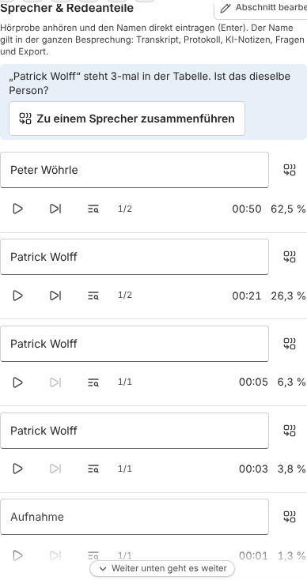
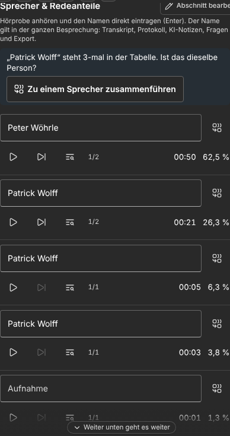
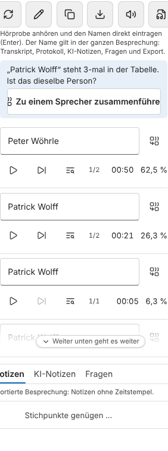
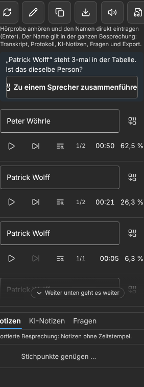
2 · Auswahl „Mit wem ist … dieselbe Person?“
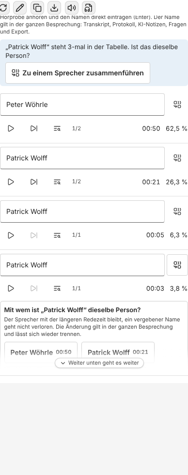
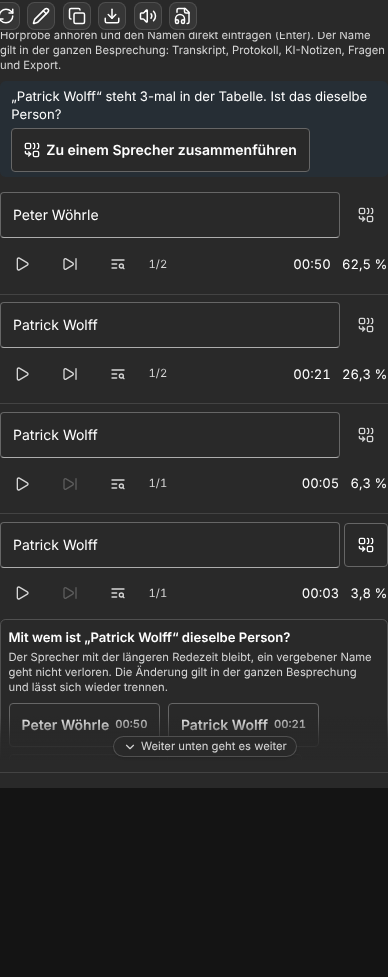
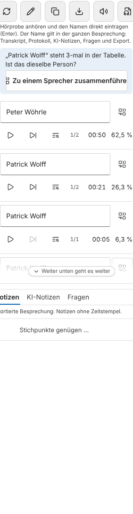
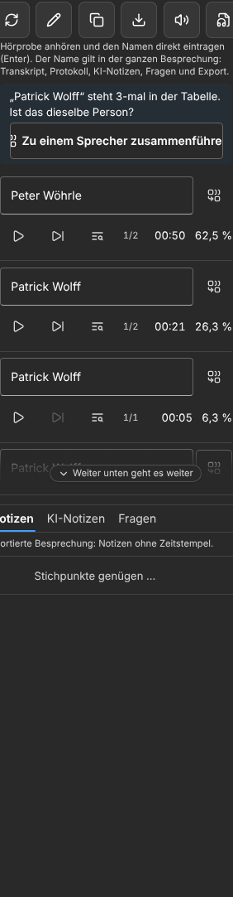
3 · Zusammengeführt, mit Rückgängig und Trennen
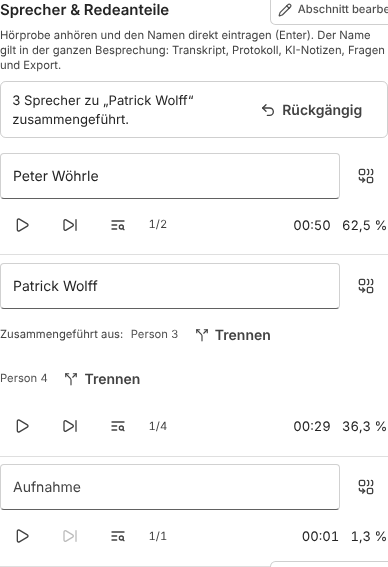
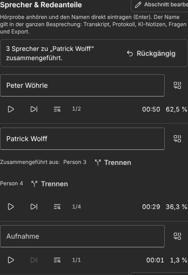
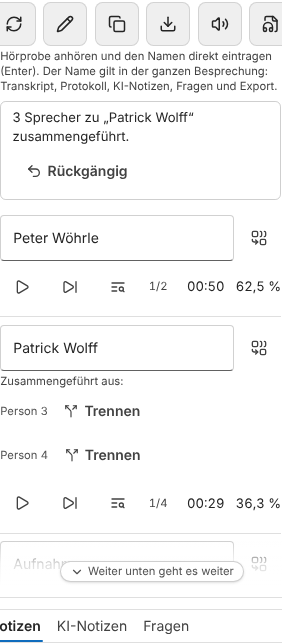
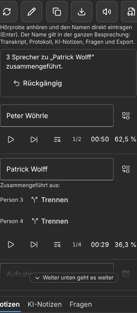
Touchziele (gemessen)
Alle neuen Knöpfe sind mindestens 44 × 44 px groß (Zusammenführen 44×44, Trennen 102×44, Rückgängig 128×44), siehe touchziele.txt. Es gibt keine horizontale Scrollleiste bei 390 und 1440 px.
Grenzen
- Zusammenführen geht nur innerhalb einer Spur. „Ich“ (Mikrofon) und „Gegenseite“ bleiben getrennte Kanäle.
- Eine neue Sprechertrennung oder Neu-Transkription verwirft die Trenn-Einträge. Die Namen bleiben dabei wie bisher über den Abgleich erhalten.
- Automatische Vorschläge per Stimmähnlichkeit kommen mit Teil 2 (Stimmprofile, eigenes Konzept).